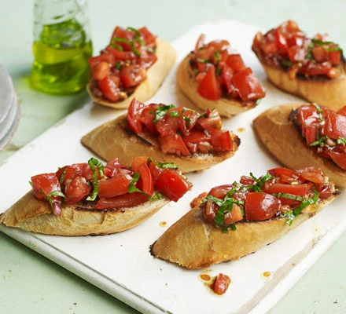

Bruschetta Recipe

Description
Make our simple tomato bruschetta as a classic Italian starter. Ideal for a summer gathering with friends, this easy dish is fresh, tasty and full of flavour
Ingredients
- ½ small red onion, finely chopped
- 8 medium tomatoes (about 500g), coarsely chopped and drained
- 2-3 garlic cloves, crushed
- 6-8 leaves of fresh basil, finely chopped
- 30ml balsamic vinegar
- 60-80ml extra virgin olive oil
- 1 loaf crusty bread
- In a large bowl, mix the onions, tomatoes, garlic and basil, taking care not to mash or break up the tomatoes too much. Add the balsamic vinegar and extra virgin olive oil. Add salt and pepper to taste. Mix again. Cover and chill for at least an hour. This will allow the flavours to soak and blend together.
- Slice the baguette loaf diagonally into 12 thick slices and lightly toast them until they are light brown on both sides. Serve the mixture on the warm slices of bread. If you prefer the mixture at room temperature, remove from the fridge half an hour before serving.